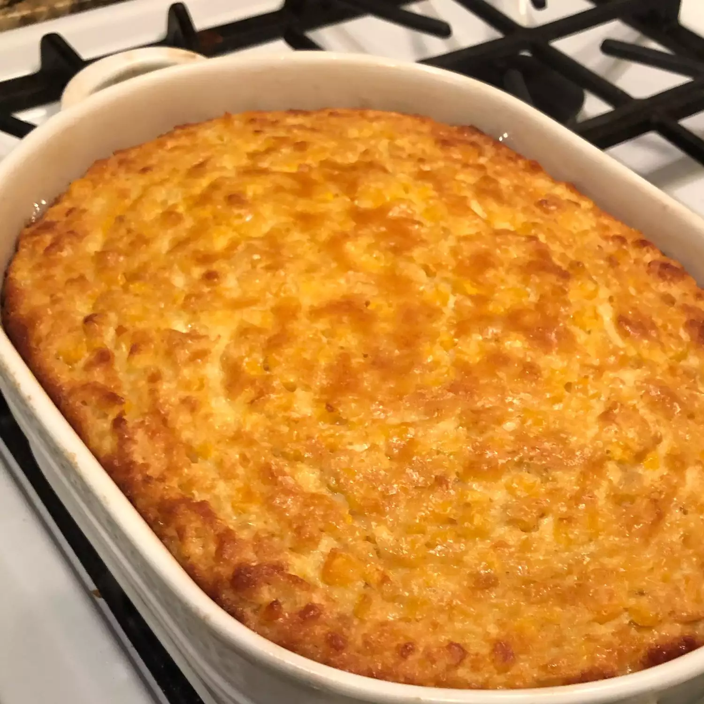

Grandma's Corn Pudding

Descripton
Grandma's corn pudding is comfort food at its best.
This creamy corn casserole is easy to make with both
whole kernel and cream-style corn, resulting in a custardy pudding that
will be a welcome addition to your holiday table.
Ingredients
- 5 large eggs
- ⅓ cup butter, melted and slightly cooled
- ¼ cup white sugar
- ½ cup milk
- ¼ cup cornstarch
- 1 (15.25 ounce) can whole kernel corn, drained
- 2 (14.75 ounce) cans cream-style corn
Instructions
- Preheat the oven to 400 degrees F (200 degrees C). Grease a 2-quart casserole dish.
- Whisk the eggs, then whisk in the milk, butter, sugar, and cornstarch.
- Stir in the drained canned whole kernel corn and cream-style corn.
- Pour mixture into the prepared casserole dish and bake until golden brown.
- Tuck in and Enjoy!